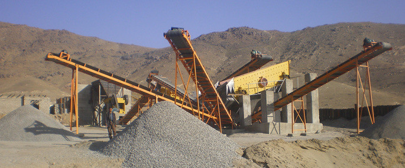
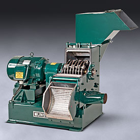

Product Center
SHANGHAI MCC MACHINERY CO., LTD is one high-tech enterprise, which involves R&D, production, sales and service as well. In the past 20 years, we devote to producing mining equipments, sand making machines and industrial grinding mills, offering expressway, rail way and water conservancy projects the solution of making high grade sand and matched equipments.
-

Ball Mill
Ball Mill is the key equipment that smash the material again, after breaking the material. Ball mill...
learn more - 
Hammer Mill
Hammer mill has simpler structure than any other grinding mill machines in practice. The prices of...
learn more -

LM Vertical Grinding Mill
LM vertical grinding mill belongs to fine grinding mill equipment. LM vertical grinding mill is mainly...
learn more -

Raymond Mill
Raymond mill, also known as Raymond, Raymond machine, instead of a ball mill processing ore powder...
learn more -

Verical Roller Mill
Vertical roller mill is MCC company to solve the industrial mill production is low, high energy consumption...
learn more